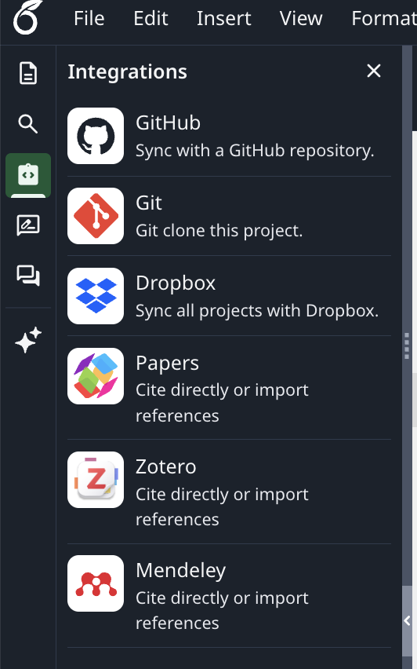

A Practical Guide
Edit your LaTeX papers locally with full AI tooling - keep coauthors happy on Overleaf
Overleaf is great for collaboration but limited as an editor: no Copilot, no Claude Code, no Codex, no proper diffing, no terminal. The fix is to write locally in VS Code and let Overleaf stay in sync with what you produce. Two routes work well, and both require Overleaf Premium - some universities provide this for free through your institutional login. For the AI tooling that makes the local workflow worth it, see the Claude Code guide and the Codex guide.
Which route?
If you ever want to git log your paper, use GitHub. If your coauthor is editing in Overleaf at the same time you are typing in VS Code, use Dropbox. The table summarises the practical differences.
Setup A
Writing a paper is hard enough without also debugging git from a terminal. GitHub Desktop gives you a clickable interface for everything you need - commit, push, pull, branch - without learning the command line. That is the default I would recommend. If you are already comfortable running git from the terminal, the same workflow works with the CLI; just substitute the obvious commands at each step. Use whichever feels less distracting from the actual writing.

.gitignore. When GitHub Desktop sets up the repo, accept the TeX template. It keeps compiled output (.pdf, .aux, .synctex.gz, etc.) out of the repo so the history stays clean. You can ask Claude Code or Codex to edit your .gitignore.
Setup B
Dropbox is the lighter-weight option. There is no commit step - whatever you save in VS Code shows up in Overleaf within seconds, and edits made in Overleaf flow back the same way. Good for active coauthoring; less good if you want a paper trail.
Apps/Overleaf/ folder in your Dropbox containing one subfolder per project.latexmk -pdf if you have a working TeX installation.Gotchas
tlmgr install <name>.\includegraphics{../Figures/fig1.pdf} - keep figures in a subfolder of the project root.filename (conflicted copy).tex rather than warning you. Skim the project folder occasionally.Why this matters
Once your paper lives in a local folder, Claude Code, Codex, and Copilot can all read and edit the .tex files directly - rewriting paragraphs, fixing tables, chasing down referee comments, drafting cover letters. That is the whole point of the local detour. See the Claude Code guide and the Codex guide for setup, and the side-by-side comparison if you have not picked between them yet.